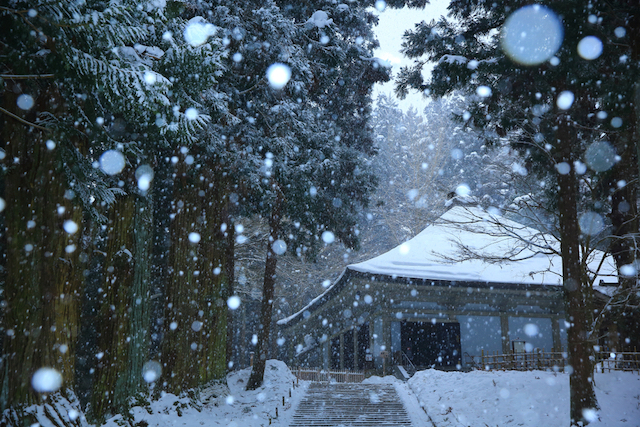

盛岡情報ビジネス＆デザイン専門学校の新井天海（あらいてんかい）です。１年のシステム科に所属しており、主にセキュリティ分野やタイピングに注力しています。現在は国家試験に向けアルゴリズムを中心に日々学んでいます。 ８から１０歳まで陸上を習い、１０歳から１５歳までの５年間はサッカーをしていました。その環境では学業とそれ以外のところでの文武両道を学びながらさらにメンタルを鍛えていき、高校に上がってからの３年間では毎日の学業を怠らないよう意識して学んできました。

盛岡情報ビジネス＆デザイン専門学校の新井天海（あらいてんかい）です。１年のシステム科に所属しており、主にセキュリティ分野やタイピングに注力しています。現在は国家試験に向けアルゴリズムを中心に日々学んでいます。 ８から１０歳まで陸上を習い、１０歳から１５歳までの５年間はサッカーをしていました。その環境では学業とそれ以外のところでの文武両道を学びながらさらにメンタルを鍛えていき、高校に上がってからの３年間では毎日の学業を怠らないよう意識して学んできました。
最近ではアウトドアなことにハマっていて、スケートボードが特にハマっています。 スピードにのりながら行う技の技術がかなり難しいところが好きであり、イメージをする意識や体の使い方が複雑なので成功した時の達成感を感じるのと同時に乗りに行く恐怖心が無くなりスケートボードと一体化したような気分になれます。 今後はさらに難しい技にも挑戦して自分自身が成長出来るよう頑張りたいと思っています。